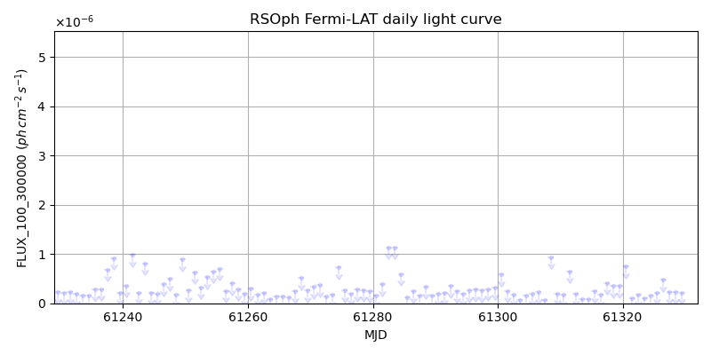
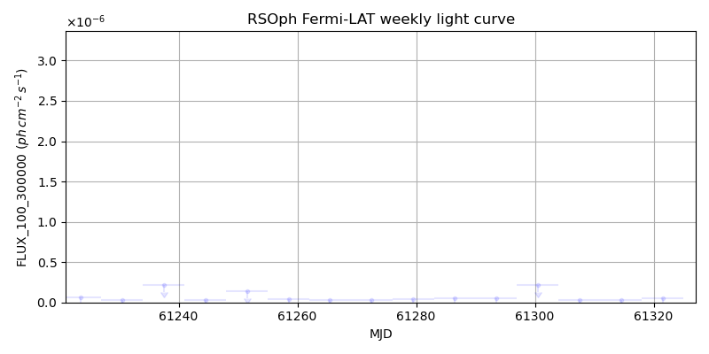
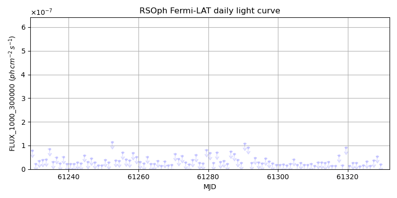
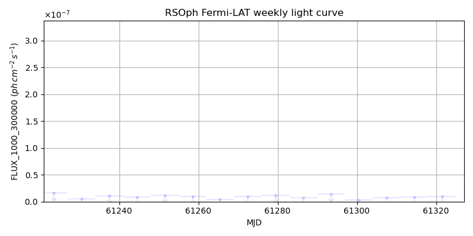

LAT Lightcurve site: https://fermi.gsfc.nasa.gov/ssc/data/access/lat/msl_lc/source/RS_Oph
NED: Query
Time of last update of this page: UT: 2026-10-17 15:24 (MJD: 61330.642)
| Property | Value |
|---|---|
| R.A. | 17:50:13.20 |
| Dec. | -6:42:28.8 |
| z | 0.000 |
| 3FGL SpectrumType | |
| 3FGL PL Index | -1.00 |
| 3FGL Flux_100_300000 | -1.00e+00 |
| 3FGL Flux_1000_300000 | -1.00e+00 |
| 3FGL Flux >200 GeV | -1.00e+00 |
| 3FGL Extrap. Crab >200 GeV | -1.00 |
| 3FGL Flux After EBL Absorption >200GeV | -1.00e+00 |
| 3FGL EBL Crab Fraction >200GeV | -1.00 |

| MJD | dMJD | Flux | dFlux | Frac3FGL | FracCrab>200GeV | EBLFracCrab>200GeV |
|---|---|---|---|---|---|---|
| 61325.50 | 0.50 | 2.18e-07 | 0.00e+00 | 0.00 | 0.00 | -0.00 |
| 61326.50 | 0.50 | 4.74e-07 | 0.00e+00 | 0.00 | 0.00 | -0.00 |
| 61327.50 | 0.50 | 2.22e-07 | 0.00e+00 | 0.00 | 0.00 | -0.00 |
| 61328.50 | 0.50 | 2.23e-07 | 0.00e+00 | 0.00 | 0.00 | -0.00 |
| 61329.50 | 0.50 | 2.18e-07 | 0.00e+00 | 0.00 | 0.00 | -0.00 |

| MJD | dMJD | Flux | dFlux | Frac3FGL | FracCrab>200GeV | EBLFracCrab>200GeV |
|---|---|---|---|---|---|---|
| 61293.50 | 3.50 | 5.60e-08 | 0.00e+00 | 0.00 | 0.00 | -0.00 |
| 61300.50 | 3.50 | 2.17e-07 | 0.00e+00 | 0.00 | 0.00 | -0.00 |
| 61307.50 | 3.50 | 3.07e-08 | 0.00e+00 | 0.00 | 0.00 | -0.00 |
| 61314.50 | 3.50 | 3.00e-08 | 0.00e+00 | 0.00 | 0.00 | -0.00 |
| 61321.50 | 3.50 | 5.67e-08 | 0.00e+00 | 0.00 | 0.00 | -0.00 |

| MJD | dMJD | Flux | dFlux | Frac3FGL | FracCrab>200GeV | EBLFracCrab>200GeV |
|---|---|---|---|---|---|---|
| 61325.50 | 0.50 | 3.20e-08 | 0.00e+00 | 0.00 | 0.00 | -0.00 |
| 61326.50 | 0.50 | 1.40e-08 | 0.00e+00 | 0.00 | 0.00 | -0.00 |
| 61327.50 | 0.50 | 3.69e-08 | 0.00e+00 | 0.00 | 0.00 | -0.00 |
| 61328.50 | 0.50 | 5.47e-08 | 0.00e+00 | 0.00 | 0.00 | -0.00 |
| 61329.50 | 0.50 | 2.13e-08 | 0.00e+00 | 0.00 | 0.00 | -0.00 |

| MJD | dMJD | Flux | dFlux | Frac3FGL | FracCrab>200GeV | EBLFracCrab>200GeV |
|---|---|---|---|---|---|---|
| 61293.50 | 3.50 | 1.38e-08 | 0.00e+00 | 0.00 | 0.00 | -0.00 |
| 61300.50 | 3.50 | 3.27e-09 | 0.00e+00 | 0.00 | 0.00 | -0.00 |
| 61307.50 | 3.50 | 7.31e-09 | 0.00e+00 | 0.00 | 0.00 | -0.00 |
| 61314.50 | 3.50 | 8.08e-09 | 0.00e+00 | 0.00 | 0.00 | -0.00 |
| 61321.50 | 3.50 | 9.14e-09 | 0.00e+00 | 0.00 | 0.00 | -0.00 |
--------------------------------------------------------- Using user-supplied coords: 17:50:13.20 -6:42:28.8 2000 --------------------------------------------------------- FLWO UT night of: 2026-10-18 Local Sid. @ Midnight: 01:23 Sunset (-15.0) (local, UT): 18:56 01:56 Sunrise (-15.0) (local, UT): 05:22 12:22 Moonrise (local, UT): Moonset (local, UT): 22:59 05:59 Moon phase: 0.47 --------------------------------------------------------- AzTime LSID UT Obj_el Obj_az Mn_el Mn_az Sep. --------------------------------------------------------- 18:56 20:18 01:56 38.0 229.0 30.5 195.3 28.7 19:26 20:48 02:26 33.0 235.7 28.5 202.5 28.8 19:56 21:18 02:56 27.5 241.6 25.9 209.3 28.8 20:26 21:48 03:26 21.7 246.8 22.6 215.6 28.9 20:56 22:19 03:56 15.8 251.6 18.8 221.3 29.0 21:26 22:49 04:26 9.7 255.9 14.5 226.6 29.1 21:56 23:19 04:56 3.5 260.0 9.9 231.4 29.2 22:26 23:49 05:26 -1.8 264.0 5.0 235.7 29.3 22:56 00:19 05:56 -9.4 267.9 0.2 239.8 29.4 23:26 00:49 06:26 -15.8 271.8 -5.5 243.5 29.5 23:56 01:19 06:56 -22.2 275.9 -11.3 247.0 29.7 00:26 01:49 07:26 -28.5 280.3 -17.0 250.4 29.8 00:56 02:19 07:56 -34.8 285.1 -22.8 253.6 30.0 01:26 02:49 08:26 -40.9 290.6 -28.7 256.7 30.1 01:56 03:19 08:56 -46.7 297.0 -34.7 259.8 30.3 02:26 03:49 09:26 -52.2 304.8 -40.7 263.0 30.5 02:56 04:20 09:56 -57.1 314.6 -46.8 266.4 30.7 03:26 04:50 10:26 -61.2 326.8 -52.8 270.1 30.9 03:56 05:20 10:56 -64.0 342.0 -58.9 274.3 31.2 04:26 05:50 11:26 -65.0 359.2 -64.9 279.6 31.4 04:56 06:20 11:56 -64.2 16.5 -70.8 287.0 31.6 05:22 06:46 12:22 -62.0 30.0 -75.7 297.1 31.9 --------------------------------------------------------- Source never above horizon of 55.0 deg. Dark hours >55 deg.: 0.00